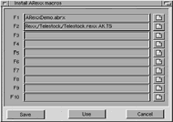

This window allows assigning particular ARexx scripts to function keys and menu items.
Just type the script name (with an optional path), or use the file requester to do this for you.
DUE TO THE WAY ARexx WORKS, A SCRIPT NAME WITH A PATH COMPONENT CANNOT CONTAIN ANY SPACES!!!!